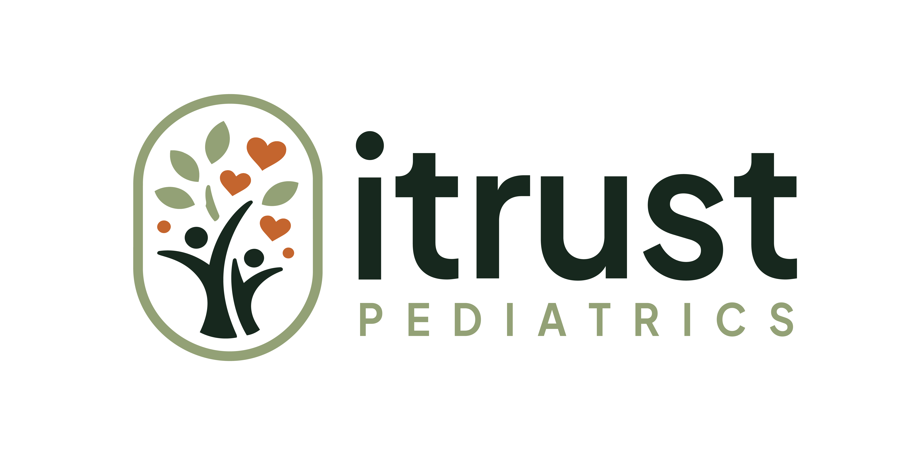

Official Logo Kit — how it looks on the site
The six files the company sent, shown on the backgrounds they're built for. Nothing on the live site has changed — this is a preview.
Horizontal lockups

On white / lightheaders
On dark greenfooter

Muted, on darksubtle
Vertical / stacked lockups
On white / creamsocial, square

On dark greenfooter, cards
Over a photowatermark
Footer — Option A: horizontal (matches current)
Every child deserves care, hope, and to be truly seen. Whole-child behavioral & mental health for every season of growing up.
OR
Footer — Option B: vertical / stacked
Every child deserves care, hope, and to be truly seen. Whole-child behavioral & mental health for every season of growing up.
Tip: the current footer already uses a white horizontal mark, so Option A is a like-for-like upgrade to the official file. Option B gives the footer a fresh, stacked look.